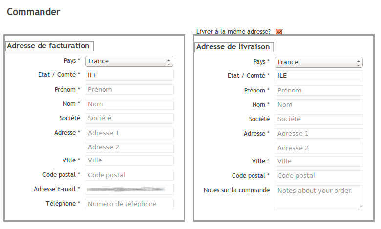

L’identification des champs de formulaire est un élément essentiel. Beaucoup d’utilisateurs handicapés vont accéder aux champs de manières très diverses.
Les utilisateurs de lecteurs d’écran disposent de raccourcis clavier leur permettant de naviguer rapidement d’un champ à l’autre et certains dispositifs de navigation vocale proposent d’accéder aux champs par leur nom.
Dans ce type de contexte, il est important que chaque champ de formulaire possède une étiquette liée, afin qu’elle soit restituée lors de la prise de focus. Cela permettra aux personnes aveugles d’utiliser à profit les raccourcis clavier et aux utilisateurs de navigation vocale d’accéder rapidement aux champs. En effet, quand on clique sur l’étiquette d’un champ, cela active le champ. Une étiquette correctement reliée à un champ permet donc d’étendre la surface de clic et améliore ainsi l’efficacité des manipulations, en particulier pour les utilisateurs de dispositifs de pointage adapté.
Étiquettes
Une étiquette de champ est un texte qui permet d’expliquer quelle donnée est attendue par le champ (nom, prénom, date de naissance, courriel, etc.).
Pour être conforme, une étiquette doit :
être pertinente ;
être correctement reliée au champ correspondant.
Pertinence des étiquettes de champs
Une étiquette est pertinente si elle permet de comprendre la fonction du champ auquel elle est reliée. Il faut rester concis : l’objectif est que l’utilisateur comprenne ce qu’on attend de sa saisie. Par exemple, pour les données d’identité, une étiquette « Nom », une étiquette « Prénom » et une étiquette « Téléphone » sont des étiquettes pertinentes qui permettent de comprendre ce que l’on doit y inscrire.
De plus, une étiquette associée à un champ de formulaire ayant la même fonction et répétée plusieurs fois dans une même page ou dans un ensemble de pages doit être cohérente.
Note : pour un champ de recherche, il est toléré de positionner l’étiquette hors écran, si elle reste accessible aux lecteurs d’écran, parce que le contexte permet d’en comprendre la fonction.
placeholder, attention.
Un placeholder est un texte décoratif qui peut être ajouté au niveau d’un champ de formulaire. C’est un texte grisé qui disparaît lorsque l’utilisateur débute la saisie.
Bien qu’il soit fréquemment utilisé par les designers web, placeholder n’est pas considéré comme une étiquette valide au regard du RGAA pour les raisons suivantes :
son contraste est insuffisant (ce qui peut éventuellement être corrigé avec CSS) ;
il n’est pas restitué de manière uniforme par les lecteurs d’écran, ce qui le rend inaccessible aux utilisateurs aveugles ou malvoyants.
En outre, un utilisateur pourrait penser que le placeholder constitue la valeur du champ, ce qui l’induirait en erreur et pourrait perturber sa saisie.
Si vous souhaitez malgré tout utiliser placeholder à des fins esthétiques, assurez-vous que le champ possédant le placeholder possède également un attribut title valide et pertinent. Pour cela, l’attribut title reprendra exactement le même intitulé que le placeholder. En effet, une information que vous ajouteriez dans le placeholder pour aider certains utilisateurs doit nécessairement être présente dans l’étiquette du champ, afin d’être accessible à tous.
Pertinence des intitulés de boutons
Les boutons qui permettent d’interagir avec le formulaire doivent avoir des intitulés pertinents qui permettent à l’utilisateur de comprendre l’action du bouton. Ils sont essentiels pour les utilisateurs aveugles afin qu’ils soient sûrs de l’action qu’ils réalisent.
Par exemple des intitulés comme « Envoyer », « Ok », « Valider »… ne seront pas suffisamment pertinents.
À l’inverse, des intitulés qui explicitent l’action sont pertinents : par exemple : « M’inscrire au cours de danse », « Réserver mes billets en ligne ».
Cependant, il est également possible de conserver un intitulé de bouton court, et de le rendre pertinent à l’aide d’un attribut title par exemple. Cette implémentation est conforme, mais nous vous invitons à n’utiliser cette implémentation que dans des cas restreints. En effet, l’attribut title n’est visible qu’au survol de la souris. Or, un utilisateur voyant qui navigue exclusivement au clavier n’accédera pas à cette information. Il existe des scripts qui permettent de faire apparaître le contenu de l’attribut title lors de la tabulation (par exemple AccessTooltip).
Faute d’intitulé pertinent sur un bouton de type image, les lecteurs d’écran vocaliseraient le nom du fichier image, ce qui serait incompréhensible pour les utilisateurs aveugles. Il faut donc prévoir l’intitulé du bouton lors de la phase de conception, et le communiquer aux équipes techniques, même s’il s’agit d’un bouton qui ne contient a priori qu’une image. Demandez à votre équipe d’intégrateurs de prévoir cet intitulé dans le code HTML et de le positionner hors écran sans utiliser de propriétés CSS qui le rendraient invisible pour un lecteur d’écran (cf. Liens d’accès rapides dans le Guide de l’intégrateur RGAA 3).
Étiquettes accolées
Pour aider l’utilisateur à comprendre le lien entre une étiquette et un champ, il faut accoler l’étiquette au champ de façon prévisible.
Une technique courante consiste à positionner l’étiquette immédiatement avant le champ auquel elle se rattache, soit à côté à gauche ou au-dessus à gauche du champ pour les langues qui s’affichent de gauche à droite, soit à côté à droite ou au-dessus à droite pour les langues qui s’affichent de droite à gauche. De même, une étiquette reliée à un bouton radio ou à une case à cocher est généralement positionnée après le champ.
Ces techniques sont les plus courantes mais il n’est pas exclu de faire autrement à partir du moment où étiquette et champ sont accolés.
Une étiquette accolée à un champ de manière prévisible aide l’utilisateur à se repérer plus facilement dans le formulaire, et à identifier plus facilement l’action qu’il doit effectuer pour chaque champ. C’est particulièrement important pour les utilisateurs ayant recours à une loupe d’écran : si l’étiquette est trop éloignée du champ qu’elle concerne, l’utilisateur la perdra de vue et ne saura pas quel champ il remplit.
Listes de choix
Les listes de choix (également appelées listes déroulantes) doivent être, comme tout champ de formulaire, étiquetées correctement.
Si la liste de choix propose un certain nombre d’options pour lesquelles il est possible de faire des regroupements, alors il faut prévoir ces regroupements et leurs étiquettes respectives. Ces regroupements visuels et sémantiques aideront les utilisateurs à se repérer dans des listes de choix particulièrement longues.
Regroupement de champs
Dans certains formulaires, il est nécessaire de créer des regroupements de champs. Ces regroupements de champs sont utiles pour ne pas induire certains utilisateurs, notamment aveugles, en erreur.
Par exemple, un formulaire d’achat en ligne propose un formulaire avec la saisie d’une adresse de livraison et une adresse de facturation. Puisque les deux vont posséder des champs avec des étiquettes similaires, il est impératif de créer un regroupement pour que l’utilisateur comprenne quelle adresse il renseigne.

Les autres cas typiques de regroupements nécessaires sont les groupes de cases à cocher ou de boutons radio.
En outre, les regroupements de champs doivent posséder eux aussi une étiquette pertinente.
Modification, mise à jour ou récupération des données
Chaque formulaire devrait permettre à l’utilisateur de modifier, mettre à jour ou récupérer les informations qu’il a saisies. C’est particulièrement important pour les données à caractère financier, juridique ou personnel.
Pour les formulaires en une page, cela ne pose pas de problème particulier de conception du moment que les champs de saisie concernés restent modifiables à tout moment avant validation du formulaire.
Si les champs sont désactivés au fur et à mesure de la saisie, par exemple, il faut prévoir une page récapitulative avec la possibilité de modifier chaque champ.
Aides à la saisie
L’objectif des aides à la saisie est d’éviter aux utilisateurs de faire des erreurs lorsqu’ils remplissent un formulaire. Ces aides contextuelles ne sont nécessaires que lorsque l’étiquette rattachée au champ ne suffit pas à décrire le type de saisie attendue.
Deux types d’aides à la saisie peuvent ainsi être prévus dans les formulaires : d’une part, l’indication des champs obligatoires ; d’autre part, l’indication du format attendu.
Champs obligatoires
Le RGAA n’impose pas que les champs obligatoires soient systématiquement indiqués à l’utilisateur (par exemple, il est inutile de le faire sur le seul champ d’un moteur de recherche). Par contre, si vous indiquez les champs obligatoires, cela doit être fait de manière accessible. On identifie trois façons principales de faire.
Indication textuelle dans l’étiquette
L’indication de champ obligatoire peut être mise directement dans son étiquette, par exemple : « Nom (champ obligatoire) ». C’est la solution la plus simple.
Indication par un symbole
Il est aussi très courant de trouver l’indication de champs obligatoire au moyen d’un astérisque. Cette pratique est tout à fait conforme si vous donnez une légende à ce symbole, et ce avant le formulaire concerné.
Indication par la couleur
Si vous décidez de placer les étiquettes des champs obligatoires en rouge pour signifier les champs obligatoires, assurez-vous que cette couleur soit toujours doublée d’un symbole clairement explicité. En effet, un utilisateur aveugle n’a pas accès aux couleurs, et un utilisateur ne distinguant pas les couleurs ne pourra pas non plus les percevoir.
Format attendu
L’aide contextuelle peut également informer l’utilisateur du format de saisie attendu.
Par exemple, si un champ de date attend que les valeurs jour, mois et année soient distinguées par une barre oblique pour être conforme, vous devez donc indiquer « jj/mm/aaaa », qui correspond au format de saisie.
La solution la plus simple est d’ajouter ce texte d’aide dans l’étiquette : il sera alors accessible à tous les utilisateurs, quel que soit leur handicap.
Lorsque le formulaire retourne des erreurs après validation, l’erreur doit être mentionnée de manière explicite soit :
dans l’étiquette du champ ;
dans un passage de texte situé avant le formulaire, qui rassemble la liste de tous les champs erronés ;
dans un passage de texte relié techniquement au champ de saisie.
Au niveau AA, les messages d’erreur de saisie relative à l’utilisation d’un mauvais format de données, par exemple une erreur de saisie de courriel, doivent comporter un exemple de saisie réelle. Cela aide l’utilisateur à comprendre son erreur et à la corriger.
Note : si les erreurs sont indiquées au niveau de chaque champ, il n’est pas nécessaire de lister l’ensemble des erreurs en début de formulaire.
Par ailleurs, si les erreurs sont signalées après un rechargement de page, il faut prévoir la présence de l’expression « erreur sur le formulaire » dans le titre de la page (c’est à dire l’en-tête de la fenêtre).